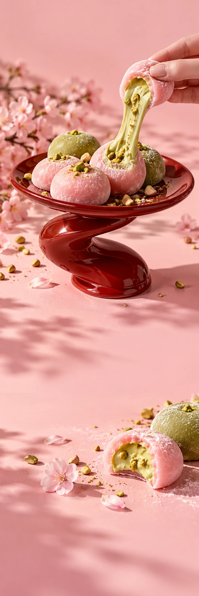

MOCHI SOCIAL
Food & treatsSmaaklancering
MEET YOUR NEW SOFT SPOT
SMALL BITE.
BIG CRUSH.
Ontdek de smaken MOCHI SOCIAL / VAN DICHTBIJ
Een zachte
landing.
Een dun jasje van rijstdeeg. Een romige kern. Van aardbei tot matcha: kies je eerste crush en bewaar de andere voor later.
01Aardbei
02Matcha
03Pistache
Better
together.
Een klein rondje geluk. En dan nog eentje.
Ontdek de smaken